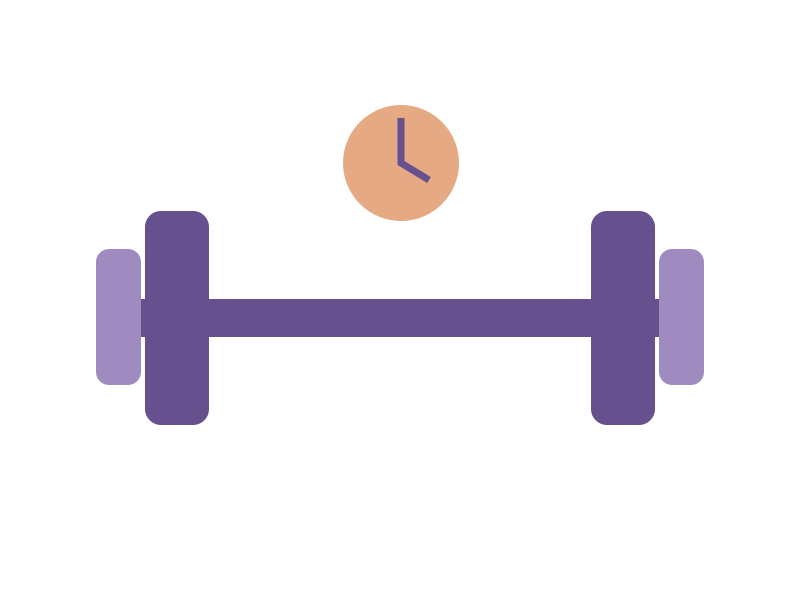

Move a little. Begin again tomorrow.
A practical movement notebook with simple session structures and a quiet interval timer. Choose a comfortable pace and make consistency the goal.

Choose movements you already know, leave room for recovery and stop if something hurts. This is a planning tool, not personal medical or training advice.